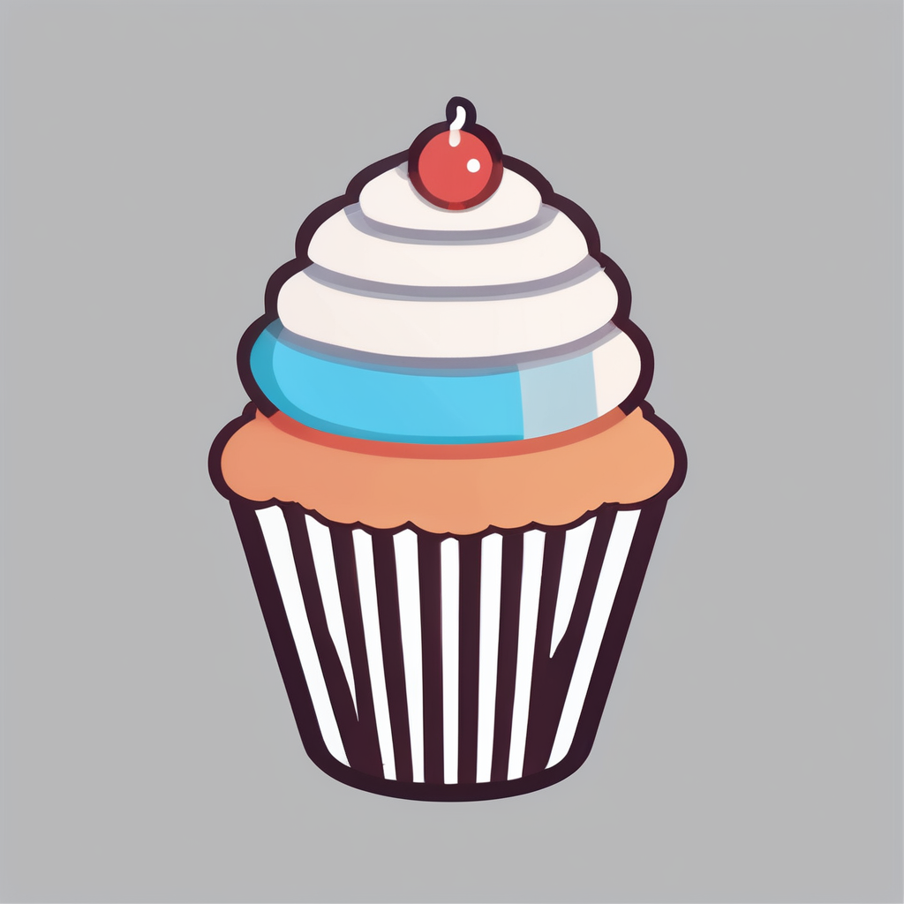

Hello World! I'm Andrea
Student
in Computer Science & Web Design
About Me
I am a self-taught webdeveloper. My first website was about my pet frogs made when I was ten years old, and published on GeoCities. I am thirty-five now and have decided to make webdevelopment my lifelong pursuit, so I am in my second year of school for Computer Science and a Minor in Graphic Design for Web. I have made a few things in Python which can be found on my Replit. I have made a few fun things in HTML/CSS/JS which can be found on my codepen.
Here is a rune reading for you:
(runes are read from right to left)
PhpCupcakeShop
My current main project is PhpCupcakeShop, a PHP framework built for simplicity and scalability without any PHP dependencies. PhpCupcakeShop is a framework that aims to provide a code-from-scratch feel for PHP developers. It offers classes and methods out of the box, allowing developers to start building pages quickly. The framework focuses on simplicity and ease of use, with straightforward variables and generic database calls. It follows the MVC (Model-View-Controller) architectural pattern, which helps in organizing code and separating concerns.
Hire me on peopleperhour $35/hr
Animal Poetry
The Ant and the Seed
She walked
with a seed on her back.
The crack in the sidewalk
was too deep.
She dropped the seed
and found another path.
When she came back
the seed was still there.
While my first novel may always be a work in progress, I have a love for creative writing. My animal poetry strives to capture unique perspectives and behaviors of animals. The poems cover a range of animal subjects and themes, from the perspective of different animal characters. The writing style is whimsical and imaginative, with a focus on vivid imagery and unique narratives.